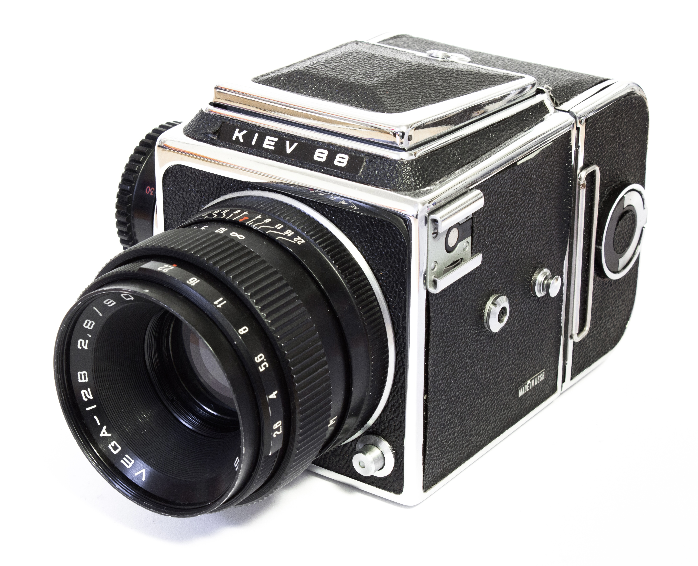

Close-Range Photogrammetry
An interactive exploration of how photographic capture strategy shapes three-dimensional digital reconstruction.
About the Object
The Kiev 88 is a medium-format single-lens reflex camera produced by the Arsenal factory in Kyiv, Ukraine, from the early 1980s through to the early 2000s. It descends from the Salyut, which was itself derived from the Hasselblad 1600F — making the Kiev 88 part of a lineage that connects Soviet industrial manufacturing to one of the most iconic camera systems in photographic history.
Despite its Hasselblad-inspired origins, the Kiev 88 diverged significantly over time. It retained a focal-plane shutter in the body rather than adopting leaf shutters in the lenses, and featured its own modular system of interchangeable viewfinders, film backs, and lenses. It was the camera of choice for professional photographers across the Soviet Union, while Zenit and Zorki rangefinders served amateurs.
Today, the Kiev 88 occupies an interesting position in the second-hand market. Once available for very little, rising interest in analogue photography has pushed prices upward. Complete kits with body, standard 80mm lens, and film back typically sell for £100–£350 depending on condition, with pristine or serviced examples (such as those rebuilt by ARAX) commanding higher prices. This makes it one of the most affordable entry points into 6×6 medium format — a fraction of the cost of an equivalent Hasselblad system.
Its combination of polished chrome trim, matte-painted metal, textured leatherette, and small-scale mechanical components makes it a challenging and instructive test case for photogrammetric capture. Each surface type responds differently to the reconstruction process. Note: the lens hood was left on during capture, so no glass optical elements are visible in the model.

The physical Kiev 88 used in this study, photographed prior to digitisation.
Interactive Comparison
The full dataset combines eye-level and elevated-angle images. Select a subset below to see how each partial image set performs on its own — and what happens when bottom-surface captures are introduced.
Capture Strategy
Source Photographs